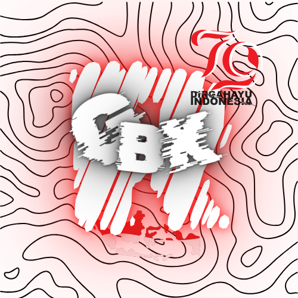

Project
Di sini, kalian dapat melihat berbagai proyek yang saya miliki, mulai dari yang telah selesai hingga yang masih dalam proses pengerjaan. Setiap proyek ini merupakan hasil kreativitas saya, yang terus berkembang seiring waktu.

GBK REBORN
Minecraft server yang di mana tidak memiliki Rules, yang masih dalam tahap pengembangan ide untuk Minecraft Server ini.
( Type Anarchy server )

BELUM KEPIKIRAN
BELUM KEPIKIRAN